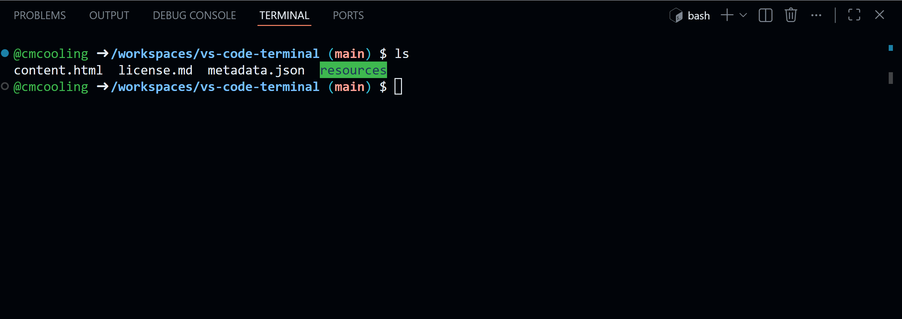
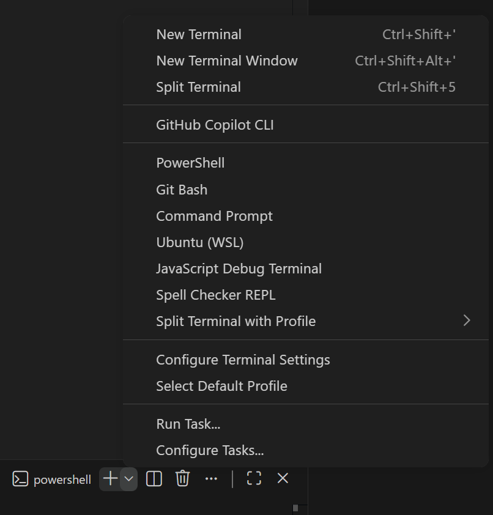

VS Code Contains a built-in terminal that allows you to run commands and scripts directly within the editor. You can open the terminal by opening the "Terminal" menu and clicking "New Terminal" or by pressing Ctrl + '.
VS Code allows you to open multiple terminal instances simultaneously, which is useful for running different commands or scripts in the same session. You can create a new terminal of the same type as the open terminal by clicking the "+" icon in the terminal panel. The different open terminals are displayed to the right of the terminal panel and you can click on them to switch between them. When you are done with a terminal, you can close it by right-clicking on the terminal in the right of the Terminal panel and selecting "Kill Terminal".

The animation above shows how to open a new terminal and close an existing one.
VS Code allows you to use different shell types in the terminal, such as Bash, zsh , and PowerShell, depending on which operating system you are using. To choose which type of terminal to open, click the chevron icon next to the "+" icon in the terminal panel and select the desired shell. VS Code is pretty good at picking up the presence of different shells present in the operating system and integrating them seamlessly. In the example below we see the shells available on my Windows machine, showing some of the variety that is possible.

Click the button at the top of the page to launch a Codespace. Once it has loaded, try the following:
ls) in the terminal.